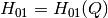
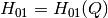
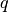

Rigid Mechanisms¶
We define a rigid mechanism as a finite number of rigid bodies interconnected by ideal joints.
Ideal Joints¶
An ideal joint is a kinematic restriction of the allowed relative twist of two rigid bodies  and
and  to a linear subspace of dimension
to a linear subspace of dimension  , where the relative motion of the bodies is described by two sets of states, namely
, where the relative motion of the bodies is described by two sets of states, namely
- a matrix
 , parameterizing the relative configuration as ,
, parameterizing the relative configuration as , - a vector
 , parameterizing the relative twist as
, parameterizing the relative twist as
where depends smoothly on and with invertible and linear in . Furthermore, there exists a mapping  .
.
Implementation¶
Several ideal joints are already implemented:
- RzJoint for hinge joints,
- RzRyJoint, RyRxJoint and RzRxJoint for cardan joints,
- RzRyRxJoint for ball and socket joints,
- FreeJoint for “free” joints, that do not constrain the relative motion.
Let’s take the example of an hinge joint, it has 1 dof, and may be parametrized by the angle  and its derivative . Here we create a joint, with angle of 60 degrees and rotational velocity of 2 radians per second.
>>> from arboris.all import *
>>> j = joints.RzJoint(gpos = 3.14/3, gvel = 2.)
>>> j.ndof
1
>>> j.gpos
array([ 1.04666667])
>>> j.gvel
array([ 2.])
The relative configuration corresponding to this joint is defined by the homogeneous is given by pose()

>>> j.pose
array([[ 0.50045969, -0.86575984, 0. , 0. ],
[ 0.86575984, 0.50045969, 0. , 0. ],
[ 0. , 0. , 1. , 0. ],
[ 0. , 0. , 0. , 1. ]])
Its inverse, is given by ipose
>>> j.ipose
array([[ 0.50045969, 0.86575984, 0. , 0. ],
[-0.86575984, 0.50045969, 0. , 0. ],
[ 0. , 0. , 1. , 0. ],
[ 0. , 0. , 0. , 1. ]])
Similarly, the relative twist is given by twist and its inverse by itwist
>>> j.twist
array([ 0., 0., 2., 0., 0., 0.])
>>> j.itwist
array([-0., -0., -2., -0., -0., -0.])
Eventually, the matrix, which we (perhaps improperly) call jacobian, is given by jacobian
>>> j.jacobian
array([[ 0.],
[ 0.],
[ 1.],
[ 0.],
[ 0.],
[ 0.]])
One can notice that
>>> all(j.twist == dot(j.jacobian, j.gvel))
True
as expected.
Mechanisms¶
Joints an bodies are interconnected in a tree-like structure, whose nodes are the bodies and edges are the joints. More precisely, a joint is connected between two frames, each belonging to a different body.